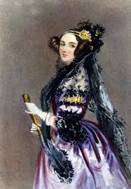
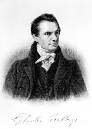

Bibliographie
Son histoire
 Ada Byron King ou connue aussi sous le nom d'Ada Lovelace est née le 10 avril 1815 à Londres, elle est la fille du poète britannique Lord Byron et Annabella Byron. Elle appartient à la haute bourgeoisie anglaise. Sa mère souhaite lui donner une éducation centrée autour de la philosophie, de la littérature mais surtout des sciences et plus particulièrement des mathématiques, ce qui est peu habituel pour une femme de cette époque.
Elle va alors rencontrer Mary Sommerville, une chercheuse scientifique qui va énormément l’instruire. C’est grâce à celle-ci qu’Ada va rencontrer Charles Babbage, un des plus grands mathématiciens du Royaume-Uni au XIXè siècle. Après avoir marqué le monde de l’informatique, elle mourra d’un cancer de l’utérus le 27 novembre 1852 à Londres et à l’âge de 36 ans.
Sa rencontre avec un grand mathématicien
 Lorsque Ada Lovelace rencontre Charles Babbage en 1833, elle a seulement 18 ans. Celui-ci a pour projet de créer une calculatrice permettant de réaliser mécaniquement des multiplications, divisions, soustractions et additions. Ce n’est que par la suite qu’il va réfléchir à un nouveau projet, la machine analytique. Ada Lovelace va donc aider Babbage à finaliser ses travaux afin de faire fonctionner sa machine.
Entre 1942 et 1943, elle va traduire des articles d’un ingénieur italien, Luigi Menabrea, concernant le moteur analytique. Elle ne va pas s'arrêter là, elle va aussi y ajouter des notes personnelles. L'une d'elles, appelée la note G, est un algorithme de calcul des nombres de Bernoulli qui définit un ensemble d'instructions qu’il faut donner pour une suite informatique. Cette note est considérée comme le tout premier programme informatique.
C’est l’imagination avant tout qui est notre capacité à découvrir. C’est elle qui pénètre dans les mondes invisibles qui nous entourent, les mondes de la science.
Ses traces
Même si les travaux d’Ada Lovelace ont été négligés pendant près d’un siècle et qu’ils ne sont réapparus qu’avec l’évolution de l’informatique, elle est particulièrement connue pour être la première programmeuse à avoir travaillé sur l’ancêtre de l’ordinateur, la machine analytique de Charles Babbage et avoir mis en place le premier programme informatique. On peut donc dire que Ada Lovelace est la pionnière de l'informatique. De plus, un langage de programmation à été conçu en 1980 et nommé en son honneur, le langage ADA, établi par le département de la Défense des États-Unis. Ce langage est encore utilisé de nos jours au sein des technologies modernes. Ada Lovelace apparait aussi dans tous les certificats d’authentification de Windows 95, produit par Microsoft. (Image : Rue Ada Lovelace, Paris, France.)